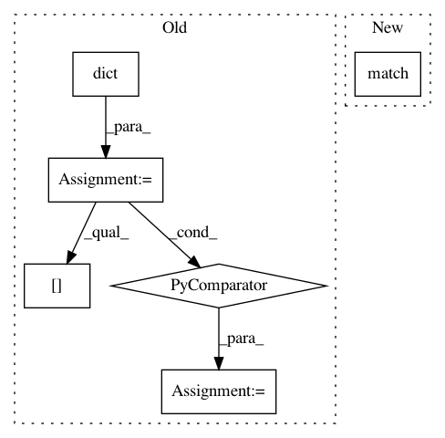

44682f54140e61f260878ad2d2703eecba91e1e9,ggplot/facets/locate.py,,locate_wrap,#Any#Any#Any#,12
Before Change
// assign each point to a panel
facet_vals.drop_duplicates(inplace=True)
lookup = dict((row, i) for i, row in
enumerate(facet_vals.itertuples(index=False), start=1))
data["PANEL"] = [lookup[t] for t in
data.loc[:, vars].itertuples(index=False)]
data.sort(columns="PANEL", inplace=True)
return data
After Change
// assign each point to a panel
keys_x = list(facet_vals.loc[:, vars].itertuples(index=False))
keys_y = list(panels.loc[:, vars].itertuples(index=False))
data["PANEL"] = match(keys_x, keys_y, start=1)
// matching dtype
data["PANEL"] = pd.Categorical(data["PANEL"])
data["PANEL"].cat.reorder_levels(panels["PANEL"].cat.levels)
In pattern: SUPERPATTERN
Frequency: 3
Non-data size: 6
Instances
Project Name: has2k1/plotnine
Commit Name: 44682f54140e61f260878ad2d2703eecba91e1e9
Time: 2015-04-20
Author: has2k1@gmail.com
File Name: ggplot/facets/locate.py
Class Name:
Method Name: locate_wrap
Project Name: snipsco/snips-nlu
Commit Name: 673eb1f351468f4d385d9cc2156a367a3c911bde
Time: 2017-05-03
Author: adrien.ball@snips.net
File Name: snips_nlu/intent_parser/regex_intent_parser.py
Class Name: RegexIntentParser
Method Name: get_intent
Project Name: has2k1/plotnine
Commit Name: 44682f54140e61f260878ad2d2703eecba91e1e9
Time: 2015-04-20
Author: has2k1@gmail.com
File Name: ggplot/facets/locate.py
Class Name:
Method Name: locate_grid